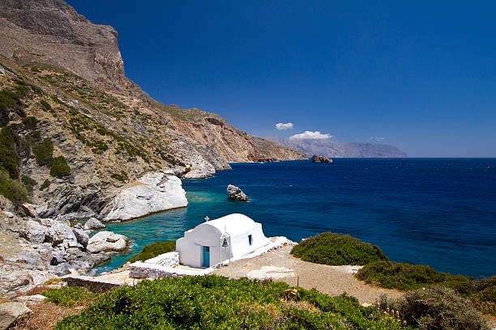

The most famous sight in Amorgos is the magnificent monastery wedged into a huge precipice, at a 300-meter altitude from sea level, called the Monastery of Hozoviotissa, which became the trademark of Amorgos. The island is also famous for its wonderful beaches & fine sand, surrounded by huge cliffs, where nudism is practiced. It is also ideal for trekking since it has impressive wild geography.
Amorgos has two ports, Katapola in the southwest and the Aegiali in the northwest, both of which you can reach via ferries from Piraeus or other islands of the Aegean. Amorgos' main port is Katapola, a place with white windmills, whitewashed little houses, and narrow streets.
The main town is called Chora and is a pure spectacle: situated below a Venetian Castle, the charming village will offer great sights to the lucky visitor. With its streets giving the feeling of being lost in a labyrinth and a superb, paved central square, Chora bewitches its visitors with its quaint setting and magical atmosphere.
The following information will help every visitor who wishes to see all the beauties of Amorgos, to learn some important things about the island, like its history and architecture, where to find the best beaches, etc. as well as all the facilities and accommodations it has to offer.